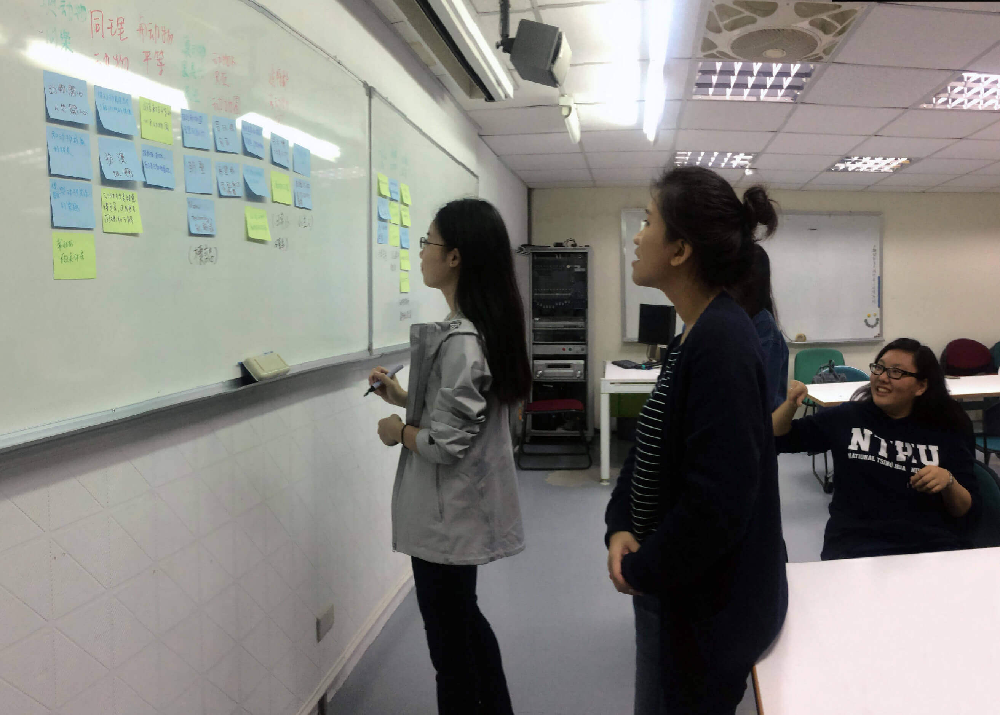
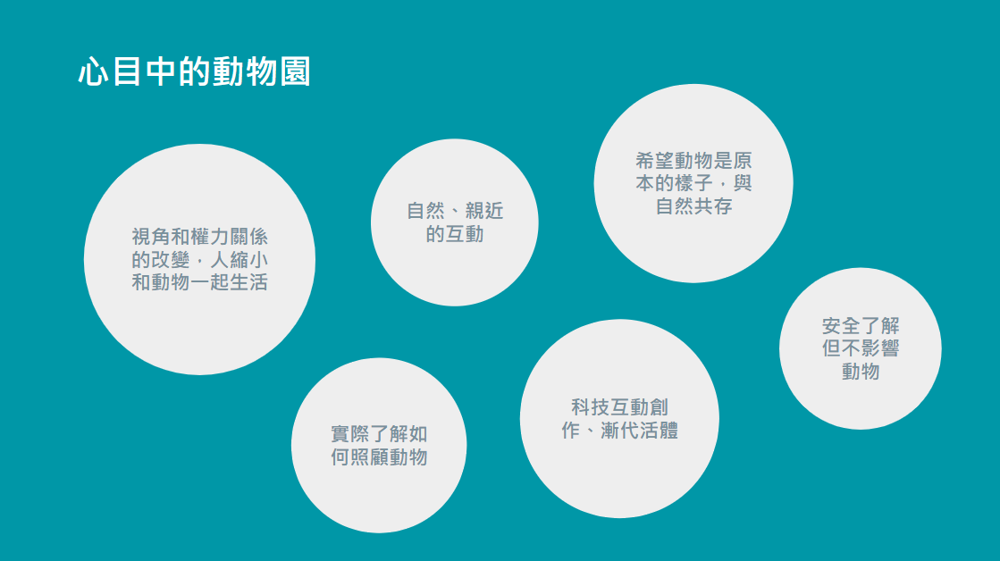

動物園再生計畫
Experience Design｜Feb. - June 2017
這個項目的核心目標是通過策劃服務設計，為新竹市立動物園遊客創造一個難忘的體驗。旨在讓遊客對動物園的動物進行更細緻的觀察和參與。這個項目目前仍在進行中，會隨專案進度持續更新。
角色 UX 設計師
能力 資料蒐集、用戶研究、訪談

前期研究
首先，我們針對新竹市立動物園進行資料與數據的收集。透過訪談新竹市立動物園園長、行政人員以及技工，我們了解到目前動物園的轉型規畫、限制以及園方對專案的需求與期待。

在完成新竹市立動物園背景研究後，我們透過問卷篩選了5位近期有良好或特殊動物園體驗的受訪者，了解遊客遊園生態和心目中動物園體驗意象，並蒐集動物園體驗設計的酷點子。
